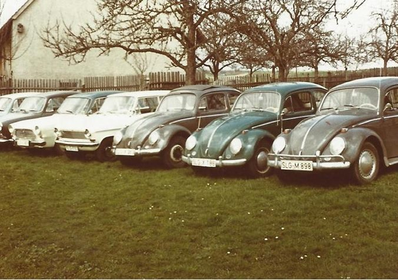
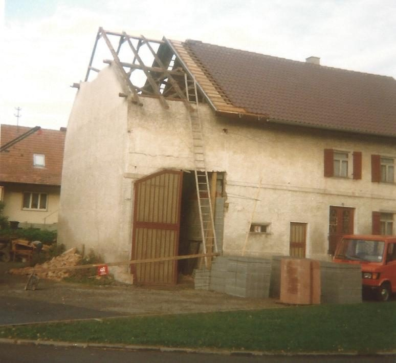
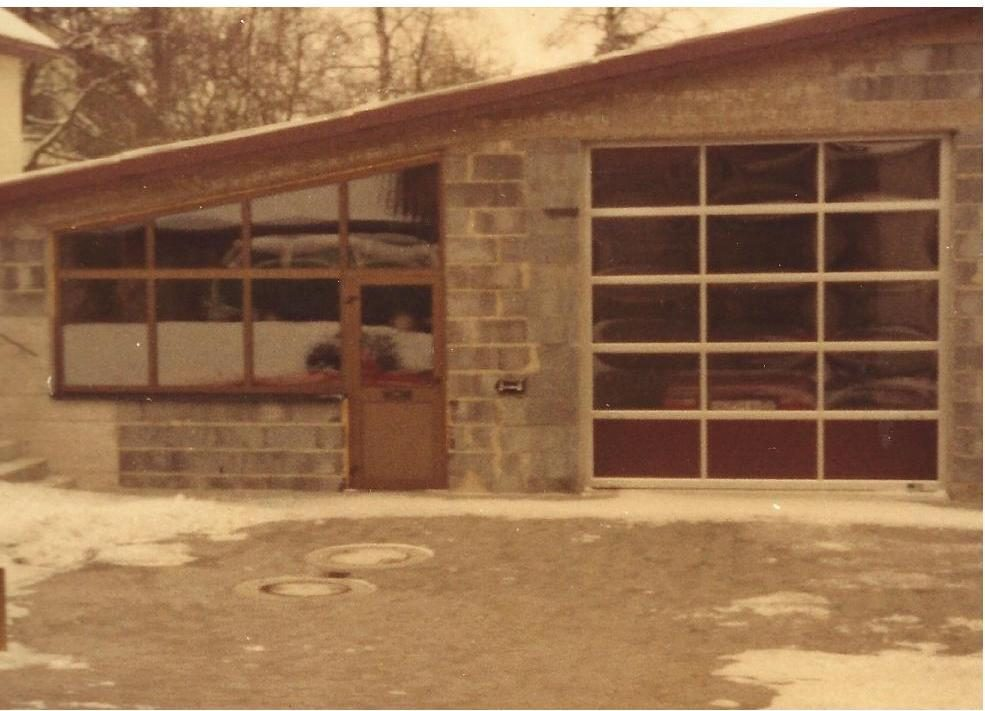
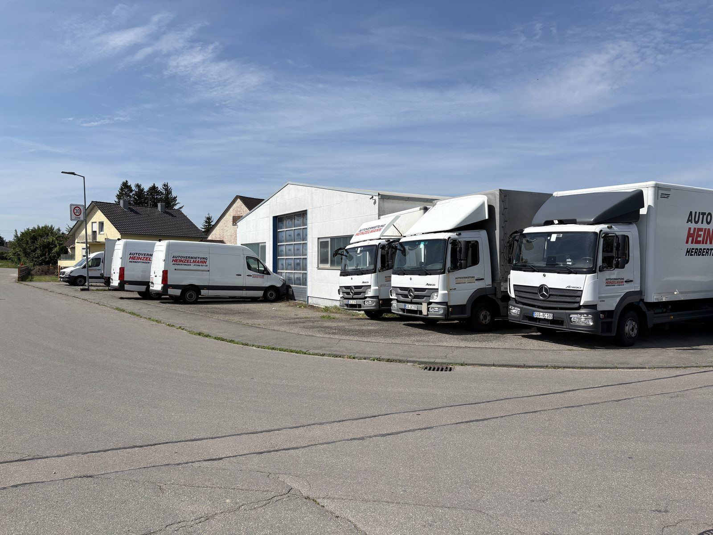
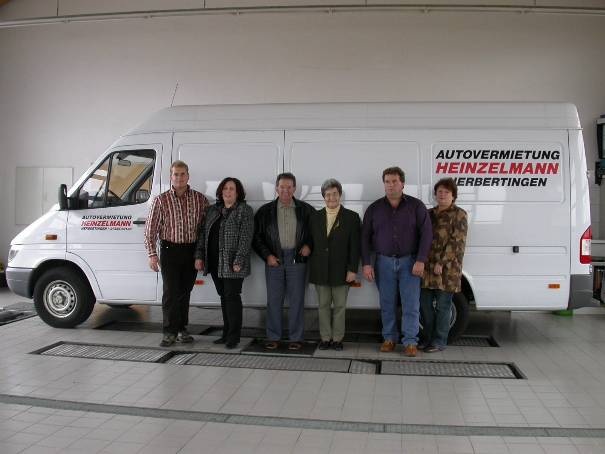
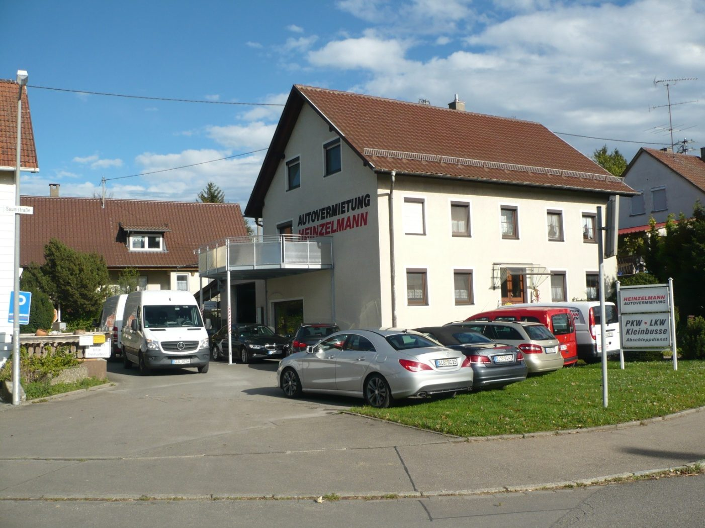

Familienbetrieb seit 1963
Vom ersten VW Käfer bis zum heutigen Fuhrpark – seit über 60 Jahre Ihr zuverlässiger Mobilitätsdienstleister im Herzen von Oberschwaben.
-
1963
Firmengründung als Autovermietung und Taxigewerbe durch Thomas Heinzelmann.
-
ab 1965
Ausbau des Fuhrparks und Erweiterung des Portfolios mit ersten Transportern und Kleinbussen.
-
1983
Erwerb und Restaurierung des Nachbargebäudes als heutiger Firmensitz.
-
1995
Neubau einer Fahrzeugunterstellhalle mit ca. 4.000 m² Freigelände und Kundenparkplätzen.
-
seit 2000
Firmenübergabe und Weiterführung des Familienbetriebes durch Elmar & Gerold Heinzelmann.
Wie alles begann
Der junge Landwirt und gelernte Automobilverkäufer Thomas Heinzelmann gründete am 1. Februar 1963 im Alter von 29 Jahren die Autovermietung Heinzelmann. Aus einem kleinen Büro und einer zur Unterstellhalle umfunktionierten Scheune heraus bot er seine ersten Mietwagen an – damals zwei VW Käfer.
In den folgenden Jahren wuchs der Fuhrpark stetig: Weitere Fahrzeugmarken kamen hinzu, der erste Transporter wurde angeschafft und die Angebotspalette nach und nach um Kleinbusse und Lkw erweitert.
Um den Service weiter auszubauen, nahm Thomas Heinzelmann ein Abschleppfahrzeug in den Fuhrpark auf und betrieb über viele Jahre einen 24-Stunden-Abschleppdienst und mehr als 30 Jahre ein Taxiunternehmen.

Neuer Firmensitz und eigene Geschäftsräume


1983 erwarb der Familienbetrieb das benachbarte Gebäude in der Saumstraße. Das über 110 Jahre alte Haus wurde teilweise abgerissen und grundlegend saniert. Ein Teil des Gebäudes wurde zu Büroräumen umgebaut, ein weiterer Trakt diente fortan als Wartungshalle für die Mietfahrzeuge.
Gleichzeitig wurde ein Abschleppwagen angeschafft und ein Pannenservice im Auftrag mehrerer Automobilclubs aufgebaut. 1980 trat Thomas' ältester Sohn Elmar Heinzelmann nach seiner Ausbildung zum Automobilmechaniker in den Betrieb ein. Sein technisches Verständnis von Fahrzeugen war eine wertvolle Ergänzung für den wachsenden Fuhrpark. In den folgenden Jahren wuchs der Bestand auf rund 40 Fahrzeuge an.
Die Räumlichkeiten in der Saumstraße 2 sind bis heute der Firmensitz der Autovermietung Heinzelmann.
Neubau der Fahrzeugunterstellhalle
Aufgrund des ständig wachsenden Fuhrparks und des steigenden Platzbedarfs wurde 1995 im angrenzenden Gewerbegebiet in der Espanstraße eine neue Fahrzeugunterstellhalle mit großzügigem Freigelände und Kundenparkplätzen errichtet.
Im selben Jahr trat auch Gerold Heinzelmann nach dem Abschluss seiner Ausbildung zum Industriekaufmann offiziell in den Familienbetrieb ein. Schon in jungen Jahren hatte er im elterlichen Betrieb mitgeholfen und war dem Unternehmen stets eng verbunden. Gemeinsam mit seinem Bruder Elmar unterstützte er den Betrieb, sodass der Fuhrpark unter der Führung von Thomas Heinzelmann weiter wachsen konnte.

Familienbetrieb in zweiter Generation
Im Jahr 2000 übergab Thomas Heinzelmann den Betrieb offiziell an seine Söhne Elmar und Gerold, die das Unternehmen seitdem als gleichberechtigte Teilhaber einer Gesellschaft bürgerlichen Rechts weiterführen. Was als kleiner Familienbetrieb in einer umfunktionierten Scheune begann, ist heute eines der größten regionalen Fahrzeugvermietungsunternehmen in Oberschwaben.
Zum Erfolg des Unternehmens tragen auch die Ehefrauen der beiden Inhaber maßgeblich bei. Ergänzt wird das Team durch eine Bürokraft sowie einen Fuhrparkpfleger, die gemeinsam dafür sorgen, dass der tägliche Betrieb reibungslos funktioniert.

Ein Fuhrpark für moderne Ansprüche
Aus dem kleinen Anfang mit zwei VW Käfern ist heute ein Fuhrpark mit über 75 Fahrzeugen geworden. Das Angebot umfasst PKW, Transporter, Kleinbusse, Anhänger und Nutzfahrzeuge verschiedener Marken.
Ein besonderes Anliegen der Autovermietung Heinzelmann ist es, mit der Zeit zu gehen: Der Anteil an Elektrofahrzeugen und Fahrzeugen mit Automatikgetriebe wächst stetig. So können Kunden zunehmend auf komfortable, moderne Fahrzeuge zurückgreifen, die den heutigen Ansprüchen an Bedienkomfort und Nachhaltigkeit entsprechen.
Das Ziel bleibt, was es von Beginn an war: das Wohl der Kunden in den Mittelpunkt zu stellen und Ihnen das Mieten eines Fahrzeugs so unkompliziert und angenehm wie möglich zu machen.
